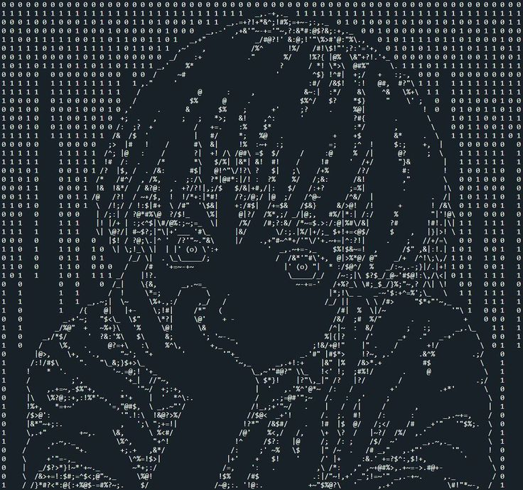

// أول ما تفتح الصفحة، يشيك هل خويك دخل الكود قبل كذا؟
window.onload = function() {
const secretKey = localStorage.getItem("the_last_road_key");
// إذا الكود مخزن ومحفوظ في جواله، طيره للمقر فوراً
if (secretKey === "unknown limit") {
window.location.href = "base.html";
} else {
// إذا أول مرة يدخل، ابدأ الكاتسين حق لين
setTimeout(typeWriter, 1500);
}
};
const text = "إنه مكان غريب... لكن مألوف قليلاً";
let i = 0;
function typeWriter() {
if (i < text.length) {
document.getElementById("typewriter").innerHTML += text.charAt(i);
i++;
setTimeout(typeWriter, 140);
} else {
setTimeout(() => {
document.getElementById("nextBtn").classList.add("visible");
}, 1000);
}
}
function goToRoom() {
// ينتقل للممر (صفحة البنت اللي تأشر)
window.location.href = "room.html";
}